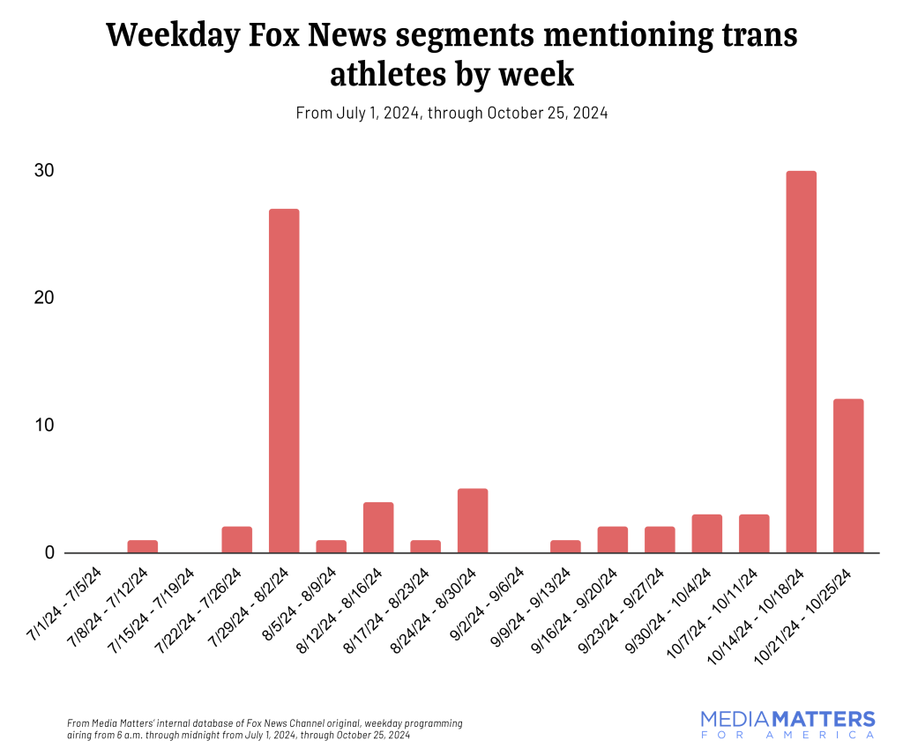
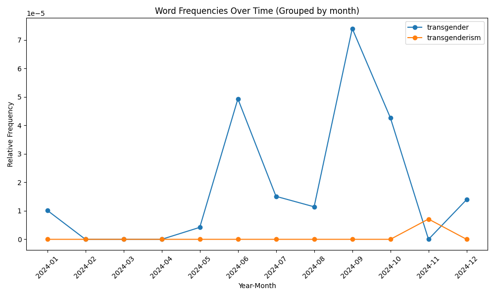
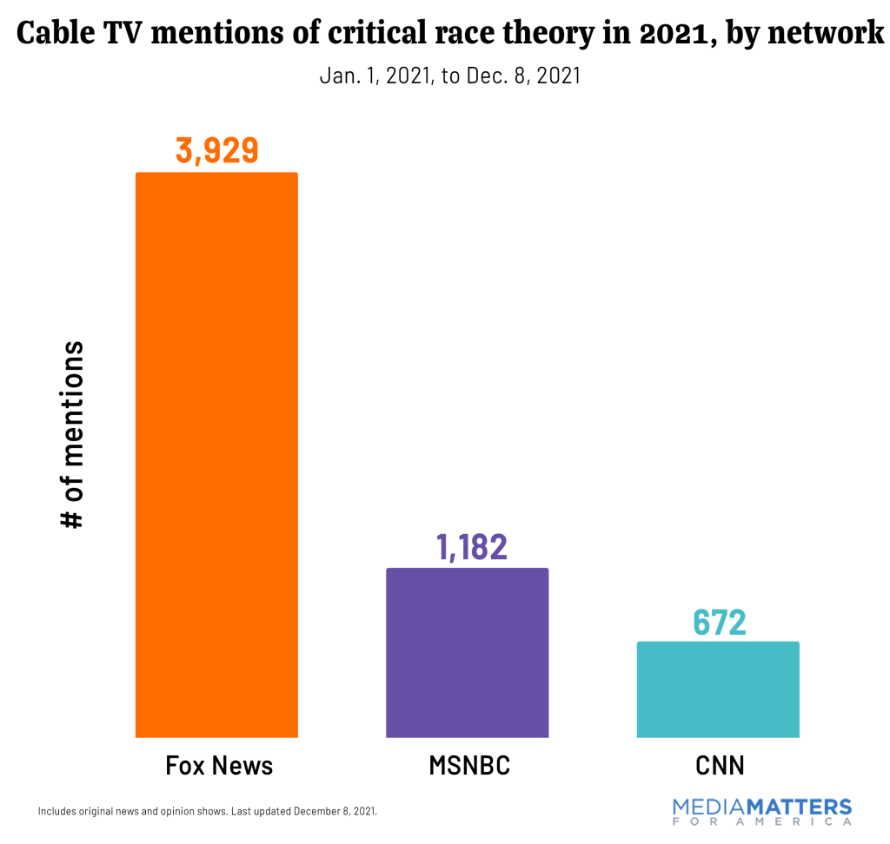
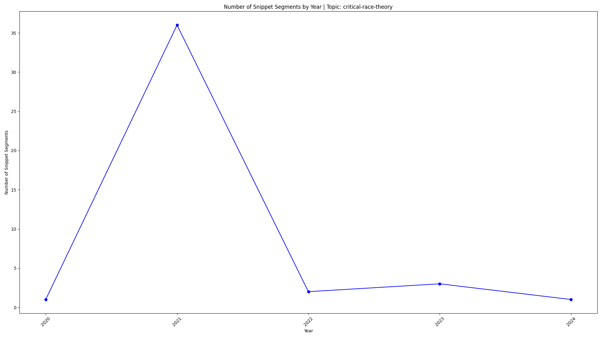

Correlating School Board Conversations with National Media Coverage
We correlated our dataset with Media Matters' national news topic coverage to identify trends and influences. Key findings include:
-
Critical Race Theory (CRT) and Transgender Student Athletes:
- Correlation: Spikes in discussions within school boards closely mirrored Media Matters' national coverage.
- Implications: Suggests that national news may significantly influence local school board discussions.
Chart 1: Media Matters vs. School Board Discussions
https://www.mediamatters.org/fox-news/fox-news-significantly-boosts-coverage-trans-athletes-weeks-electionNote: The video below is an animated chart, it displays the direct quote from each document referenced. Click play to view it.Video 1: Animated Line Chart (click play on the video player to see the chart)
Still Chart 1: "Transgender" String Search

Still Chart 2: "Transgender" Vector Database Search
-
Media Influence:
- Fox News Lag: Observed that Fox News' coverage lags behind school board activity spikes, suggesting possible other sources of influence.
- Information Sources: Potential origins include activist networks, social media influencers, or smaller news outlets like OAN or The Daily Wire.
-
Critical Race Theory Focus:
- Trend Analysis: Heavy news rotation on CRT in 2021, with discussions in school boards peaking simultaneously and declining thereafter.
- Interpretation: National news likely drives the intensity and frequency of local discussions, rather than organic grassroots interest.
Media Matters CRT Chart
https://www.mediamatters.org/critical-race-theory/numbers-year-conservative-media-fearmongering-over-critical-race-theoryNote: The video below is an animated chart, it displays the direct quote from each document referenced. Click play to view it.Video: Animated CRT Chart
Still Image of CRT Chart
Going Deeper
- Is National News Interest Impacting Efficient Resource Allocation?
Time and resources are diverted to topics driven by external influences rather than pressing local concerns.
- Example: In the Lynden School District in Whatcom County, WA the topic of transgender student athlete participation was discussed extensively across half a dozen school board meetings in 2024, culminating in a letter to the state legislature on behalf of the school district. https://lynden.wednet.edu/school-board/wiaa-transgender-athlete-participation/.
Despite the many hours of discussion and effort producing a letter on behalf of the district, there are no known cases of transgender students participating in athletics within the school district. Instead, activity correlates heavily with national partisan discourse.
- Example: In the Lynden School District in Whatcom County, WA the topic of transgender student athlete participation was discussed extensively across half a dozen school board meetings in 2024, culminating in a letter to the state legislature on behalf of the school district. https://lynden.wednet.edu/school-board/wiaa-transgender-athlete-participation/.